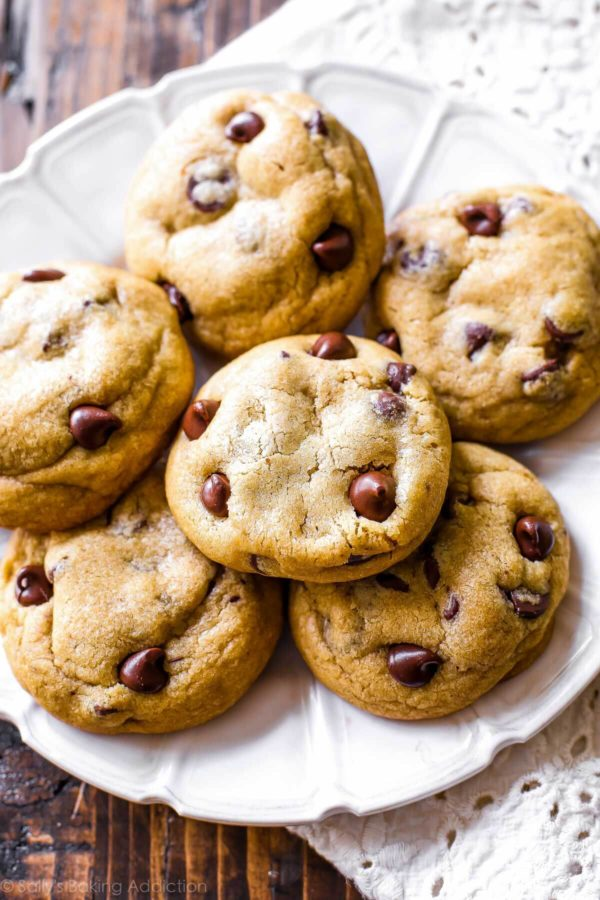

Brown Butter Chocolate Chip Cookies

Description
Brown butter chocolate chip cookies are thick, chewy, and unlike any other chocolate chip cookie. There’s as much flavor in one of these brown butter chocolate chip cookies as there is in an entire batch of classic chocolate chip cookies!
There’s as much flavor in one of these brown butter chocolate chip cookies as there is in an entire batch of ordinary chocolate chip cookies. If you’ve browned butter before, you’re familiar with the unsurpassable nutty flavor that comes along with it. Browning butter, a simple technique, can be done on the stovetop. The aroma of browned butter alone is enough to anyone salivate and the flavor is absolutely marvelous.
Ingredients
- 1 cup (230g) unsalted butter
- 1/2 cup (100g) granulated sugar
- 1 cup (200g) packed light or dark brown sugar
- 1 large egg + 1 egg yolk, at room temperature
- 2 teaspoons pure vanilla extract
- 2 and 1/2 cups (313g) all-purpose flour (spoon & leveled)
- 1 teaspoon cornstarch
- 1 teaspoon baking soda
- 1/2 teaspoon salt
- 2 Tablespoons (30ml) milk
- 1 and 1/2 cups (270g) semi-sweet chocolate chips
Instructions
-
Brown the butter: Have a large flat heat-proof baking dish, such as a 9×13 inch pan, handy. Slice the butter into
pieces and place in a light-colored skillet. The light colored helps you determine when the butter begins browning.
Melt the butter over medium heat and stir or whisk constantly. Once melted, the butter will begin to foam. Keep stirring/whisking.
After 5-7 minutes, the butter will begin browning and you’ll notice lightly browned specks begin to form at the bottom of the pan.
It will have a nutty aroma. See photo above for a visual. Once browned, remove from heat immediately and pour into dish. Cover tightly,
place in the refrigerator, and chill until solid, about 2-3 hours (or up to 1 day). A large flat dish, as opposed to a bowl, helps the
butter solidify quicker.
-
Remove solid brown butter from the refrigerator and spoon into a large bowl (or the bowl of your stand mixer). Using a hand-held
mixer or stand mixer fitted with a paddle attachment, beat the chilled brown butter for 1 minute on medium speed until completely
smooth and creamy. Add the granulated sugar and brown sugar and beat on medium high speed until light in color and combined, about 2
minutes. Beat in egg, egg yolk, and vanilla extract on high speed. Scrape down the sides and bottom of the bowl as needed.
-
In a separate bowl, whisk the flour, cornstarch, baking soda and salt together until combined. On low speed, slowly mix into the wet
ingredients until combined, then beat in the milk on medium speed. The cookie dough will be thick. Add the chocolate chips and mix on
low for about 5-10 seconds until combined. Cover dough tightly with aluminum foil or plastic wrap and chill for at least 2-3 hours and
up to 3 days. Chilling is mandatory for this cookie dough or else the cookies will over-spread.
-
Remove cookie dough from the refrigerator and allow to sit at room temperature for 10 minutes as you preheat the oven. This makes the
cookie dough easier to scoop and roll. (If the cookie dough chilled longer than 3 hours, let it sit at room temperature for about 30 minutes.)
-
Preheat oven to 350°F (177°C). Line two large baking sheets with parchment paper or silicone baking mats. Set aside.
-
Once chilled, the dough may be slightly crumbly, but will come together if you work the dough with your hands as you roll into individual balls.
Scoop and roll dough, about 1.5 Tablespoons of dough each, into balls.
-
Bake the cookies for 11-12 minutes until slightly golden brown around the edges. My oven has hot spots and yours may too so be sure to rotate the
pan once during bake time. The baked cookies will look soft in the centers when you remove them from the oven. Allow to cool for 5 minutes on the
cookie sheet. If the cookies are too puffy, try gently pressing down on them with the back of a spoon. During this time, you can press a few extra
chocolate chips into the top of the warm cookies. This is just for looks! The cookies will slightly deflate as you let them cool.
-
After 5 minutes, transfer cookies to a cooling rack to cool completely.